# devtools::install_github("derekmichaelwright/agData")
library(agData) # Loads: tidyverse, ggpubr, ggbeeswarm, ggrepel# Prep data
yy <- agData_STATCAN_Region_Table
xx <- agData_STATCAN_FarmLand_Use %>%
filter(Year == 2016, Item == "Total area of farms", Unit == "Hectares")
x1 <- xx %>% filter(Area == "Canada")
xx <- xx %>% filter(Area != "Canada") %>%
mutate(Percent = round(100 * Value / x1$Value, 1)) %>%
arrange(Percent) %>%
mutate(Area = factor(Area, levels = rev(Area)),
Area_Short = plyr::mapvalues(Area, yy$Area, yy$Area_Short))
# What is the total amount of farmland in Canada?
sum(xx$Value)## [1] 64232948# Plot
mp <- ggplot(xx, aes(x = Area_Short, y = Value / 1000000)) +
geom_bar(aes(fill = Area), stat = "identity", color = "black", alpha = 0.8) +
geom_label(aes(label = paste(Percent, "%")), nudge_y = 1.1, size = 3) +
scale_fill_manual(values = agData_Colors) +
theme_agData(legend.position = "none",
axis.text.x = element_text(angle = 90, hjust = 1, vjust = 0.5)) +
labs(title = "Canadian Farmland (2016)",
caption = "\xa9 www.dblogr.com/ | Data: STATCAN",
x = NULL, y = "Million Hectares")
ggsave("farmland_canada_1_01.png", mp, width = 6, height = 4)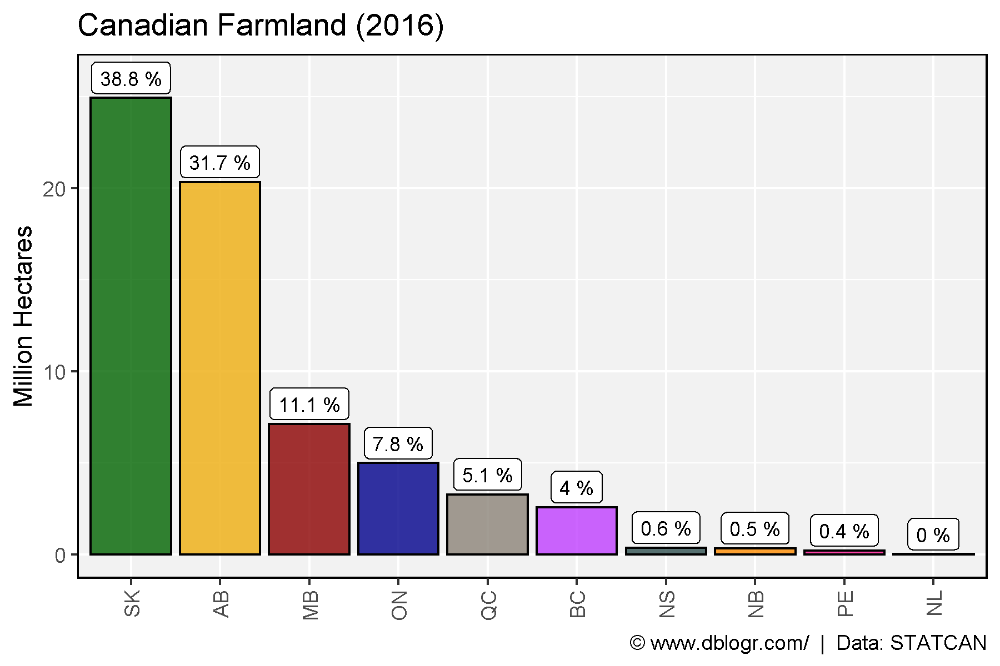
xx <- agData_STATCAN_FarmLand_Farms %>%
filter(Measurement == "Total area of farms",
Area != "Canada")
mp <- ggplot(xx, aes(x = Year, y = Value / 1000000)) +
geom_line(color = "darkgreen", size = 1.25, alpha = 0.8) +
facet_wrap(. ~ Area, scales = "free_y", ncol = 5) +
scale_x_continuous(breaks = seq(1925, 2015, 20), expand = c(0.01,0)) +
theme_agData() +
labs(title = "Canadian Farmland",
caption = "\xa9 www.dblogr.com/ | Data: STATCAN",
x = NULL, y = "Million Hectares")
ggsave("farmland_canada_1_02.png", mp, width = 12, height = 5)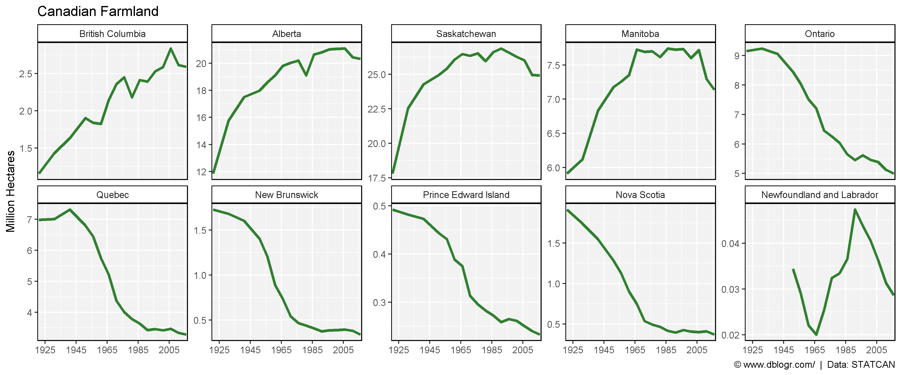
xx <- agData_STATCAN_FarmLand_Farms %>%
filter(Measurement == "Total area of farms",
Area %in% c("Ontario", "Quebec"))
mp <- ggplot(xx, aes(x = Year, y = Value / 1000000, color = Area)) +
geom_line(size = 1.25, alpha = 0.8) +
scale_color_manual(name = NULL, values = c("darkblue", "steelblue")) +
scale_x_continuous(breaks = seq(1925, 2015, 10), expand = c(0.01,0)) +
theme_agData(legend.position = "bottom") +
labs(title = "Farmland",
caption = "\xa9 www.dblogr.com/ | Data: STATCAN",
x = NULL, y = "Million Hectares")
ggsave("farmland_canada_1_03.png", mp, width = 6, height = 4)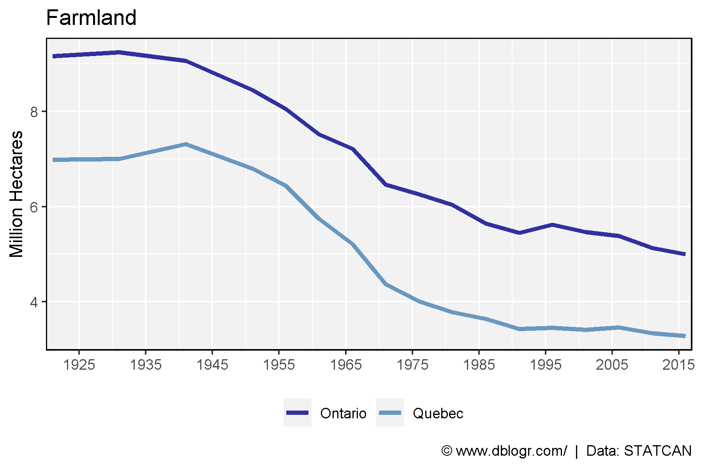
# Prep data
xx <- agData_STATCAN_FarmLand_Farms %>%
filter(Measurement %in% c("Total area of farms", "Total number of farms")) %>%
select(-Measurement, -Unit) %>%
spread(Item, Value) %>%
mutate(Size = Hectares / Number)
# Plot
mp <- ggplot(xx %>% filter(Area == "Canada"), aes(y = Size, x = Year)) +
geom_line(color = "darkgreen", size = 1.5, alpha = 0.8) +
scale_x_continuous(breaks = seq(1925, 2015, 10), expand = c(0.01,0)) +
facet_grid(. ~ Area) +
theme_agData() +
labs(title = "Average Farm Size", y = "Hectares / Farm", x = NULL,
caption = "\xa9 www.dblogr.com/ | Data: STATCAN")
ggsave("farmland_canada_2_01.png", mp, width = 6, height = 4)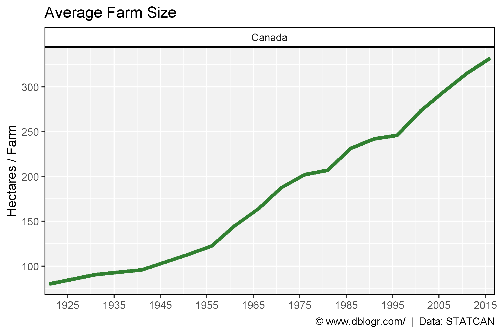
# Plot
mp <- ggplot(xx %>% filter(Area != "Canada"), aes(y = Size, x = Year)) +
geom_line(color = "darkgreen", size = 1.5, alpha = 0.8) +
facet_wrap(Area ~ ., ncol = 5) +
scale_x_continuous(breaks = seq(1925, 2005, 20)) +
theme_agData(legend.position = "bottom") +
labs(title = "Average Farm Size", y = "Hectares / Farm", x = NULL,
caption = "\xa9 www.dblogr.com/ | Data: STATCAN")
ggsave("farmland_canada_2_02.png", mp, width = 12, height = 5)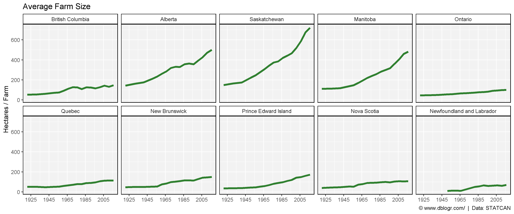
# Prep data
xx <- agData_STATCAN_FarmLand_Farms %>%
filter(Area == "Canada",
Measurement %in% c("Total area of farms", "Total number of farms")) %>%
mutate(Value = ifelse(Unit == "Hectares", Value / 100000, Value / 1000),
Unit = plyr::mapvalues(Unit, c("Hectares", "Number of farms reporting"),
c("Total area of farms (100,000 hectares)","Number of farms (x1000)")))
# Plot
mp <- ggplot(xx, aes(y = Value, x = Year, color = Unit)) +
geom_line(size = 1.5, alpha = 0.8) +
scale_color_manual(name = NULL, values = c("darkorange", "darkgreen")) +
scale_x_continuous(breaks = seq(1925, 2015, 10), expand = c(0.01,0)) +
facet_wrap(Area ~ .) +
theme_agData(legend.position = "bottom") +
labs(title = "Average Farm Size", y = NULL, x = NULL,
caption = "\xa9 www.dblogr.com/ | Data: STATCAN")
ggsave("farmland_canada_2_03.png", mp, width = 6, height = 4)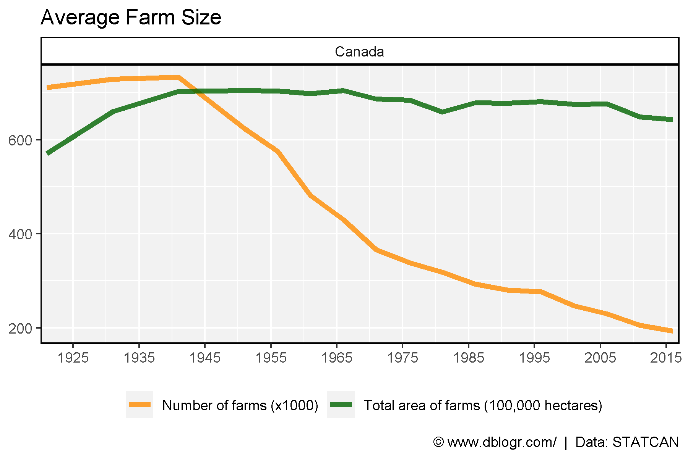
# Prep data
xx <- agData_STATCAN_FarmLand_Farms %>%
filter(Area != "Canada",
Measurement %in% c("Total area of farms", "Total number of farms")) %>%
mutate(Value = ifelse(Unit == "Hectares", Value / 100000, Value / 1000),
Unit = plyr::mapvalues(Unit, c("Hectares", "Number of farms reporting"),
c("Total area of farms (100,000 hectares)","Number of farms (x1000)")))
# Plot
mp <- ggplot(xx, aes(y = Value, x = Year, color = Unit)) +
geom_line(size = 2, alpha = 0.8) +
facet_wrap(Area ~ ., scales = "free_y", ncol = 5) +
scale_color_manual(name = NULL, values = c("darkorange", "darkgreen")) +
scale_x_continuous(breaks = seq(1925, 2005, 20)) +
theme_agData(legend.position = "bottom") +
labs(title = "Average Farm Size", y = NULL, x = NULL,
caption = "\xa9 www.dblogr.com/ | Data: STATCAN")
ggsave("farmland_canada_2_04.png", mp, width = 12, height = 5)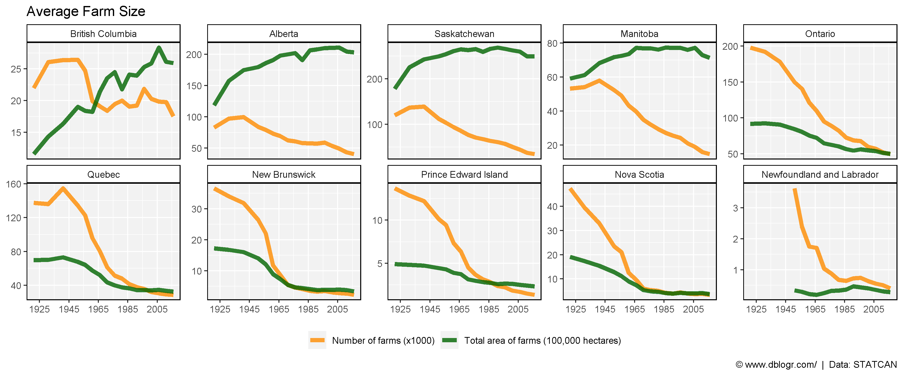
# Prep data
xx <- agData_STATCAN_FarmLand_Size %>%
filter(Area == "Canada", Measurement != "Total number of farms")
# Plot
mp <- ggplot(xx, aes(x = Year, y = Value / 1000)) +
geom_line(color = "darkgreen", size = 1.5, alpha = 0.8) +
facet_wrap(Measurement ~ ., ncol = 7) +
theme_agData() +
labs(title = "Canada - Farm Size", y = "Thousand Farms", x = NULL,
caption = "\xa9 www.dblogr.com/ | Data: STATCAN")
ggsave("farmland_canada_2_05.png", mp, width = 14, height = 5)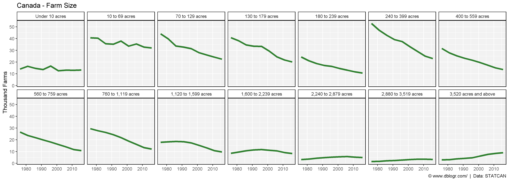
# Plot
mp <- ggplot(xx, aes(x = Year, y = Value / 1000)) +
geom_line(color = "darkgreen", size = 1.5, alpha = 0.8) +
facet_wrap(Measurement ~ ., scales = "free_y", ncol = 7) +
theme_agData() +
labs(title = "Canada - Farm Size", y = "Thousand Farms", x = NULL,
caption = "\xa9 www.dblogr.com/ | Data: STATCAN")
ggsave("farmland_canada_2_06.png", mp, width = 14, height = 5)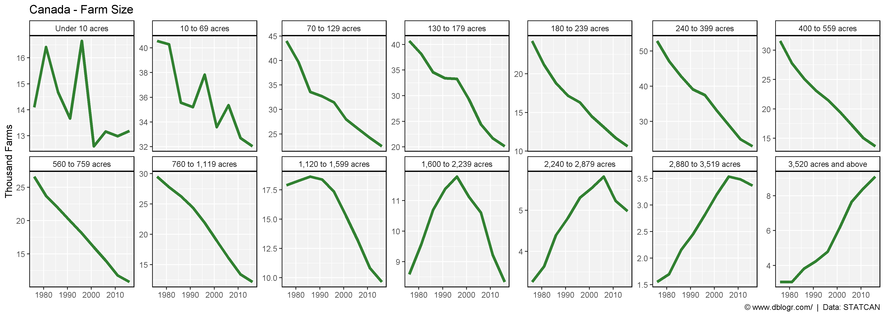
cols <- c(alpha("darkgreen",0.2), alpha("darkgreen",0.3), alpha("darkgreen",0.4),
alpha("darkgreen",0.5), alpha("darkgreen",0.6), alpha("darkgreen",0.7),
alpha("darkgreen",0.8), alpha("darkgreen",0.9), "darkgreen")
#
mp <- ggplot(xx, aes(y = Value / 1000, x = Measurement, fill = as.factor(Year))) +
geom_bar(stat = "identity", position = "dodge", color = "black") +
scale_fill_manual(name = NULL, values = cols) +
theme_agData(axis.text.x = element_text(angle = 90, hjust = 1, vjust = 0.5)) +
labs(title = "Canada - Farm Size", y = "Thousand Farms", x = NULL,
caption = "\xa9 www.dblogr.com/ | Data: STATCAN")
ggsave("farmland_canada_2_07.png", mp, width = 6, height = 4)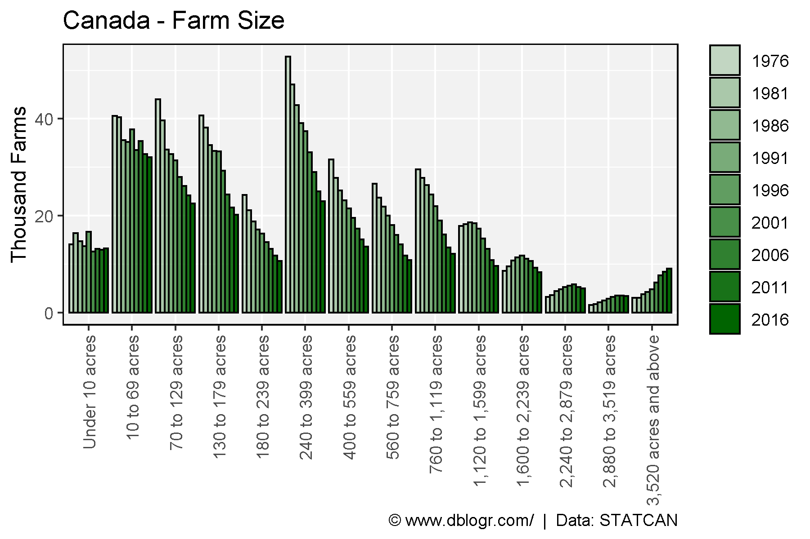
# Prep data
xx <- agData_STATCAN_FarmLand_Size %>%
filter(Area == "Saskatchewan", Measurement != "Total number of farms")
# Plot
mp <- ggplot(xx, aes(x = Year, y = Value / 1000)) +
geom_line(color = "darkgreen", size = 1.5, alpha = 0.8) +
facet_wrap(Measurement ~ ., ncol = 7) +
theme_agData() +
labs(title = "Saskatchewan - Farm Size", y = "Thousand Farms", x = NULL,
caption = "\xa9 www.dblogr.com/ | Data: STATCAN")
ggsave("farmland_canada_2_08.png", mp, width = 14, height = 5)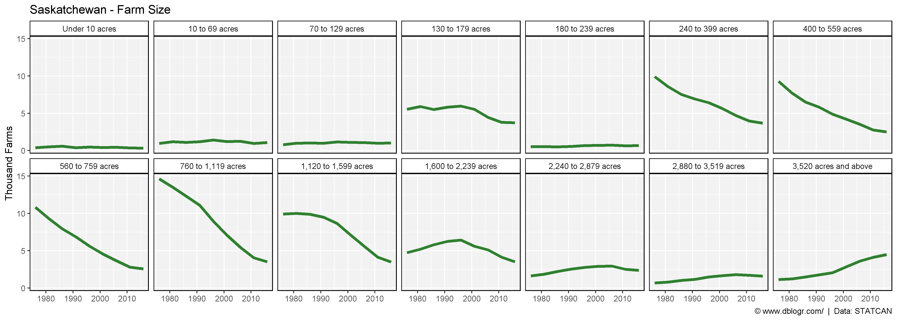
# Plot
mp <- ggplot(xx, aes(x = Year, y = Value / 1000)) +
geom_line(color = "darkgreen", size = 1.5, alpha = 0.8) +
facet_wrap(Measurement ~ ., scales = "free_y", ncol = 7) +
theme_agData() +
labs(title = "Farm Size - Saskatchewan", y = "Thousand Farms", x = NULL,
caption = "\xa9 www.dblogr.com/ | Data: STATCAN")
ggsave("farmland_canada_2_09.png", mp, width = 14, height = 5)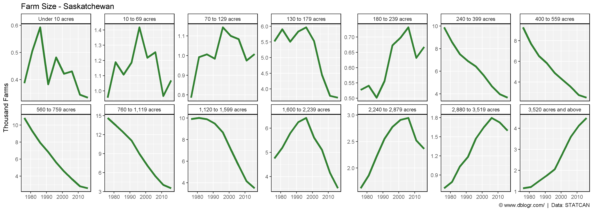
cols <- c(alpha("darkgreen",0.2), alpha("darkgreen",0.3), alpha("darkgreen",0.4),
alpha("darkgreen",0.5), alpha("darkgreen",0.6), alpha("darkgreen",0.7),
alpha("darkgreen",0.8), alpha("darkgreen",0.9), "darkgreen")
#
mp <- ggplot(xx, aes(y = Value / 1000, x = Measurement, fill = as.factor(Year))) +
geom_bar(stat = "identity", position = "dodge", color = "black") +
scale_fill_manual(name = NULL, values = cols) +
facet_grid(. ~ Area) +
theme_agData(axis.text.x = element_text(angle = 90, hjust = 1, vjust = 0.5)) +
labs(title = "Farm Size", y = "Thousand Farms", x = NULL,
caption = "\xa9 www.dblogr.com/ | Data: STATCAN")
ggsave("farmland_canada_2_10.png", mp, width = 6, height = 4)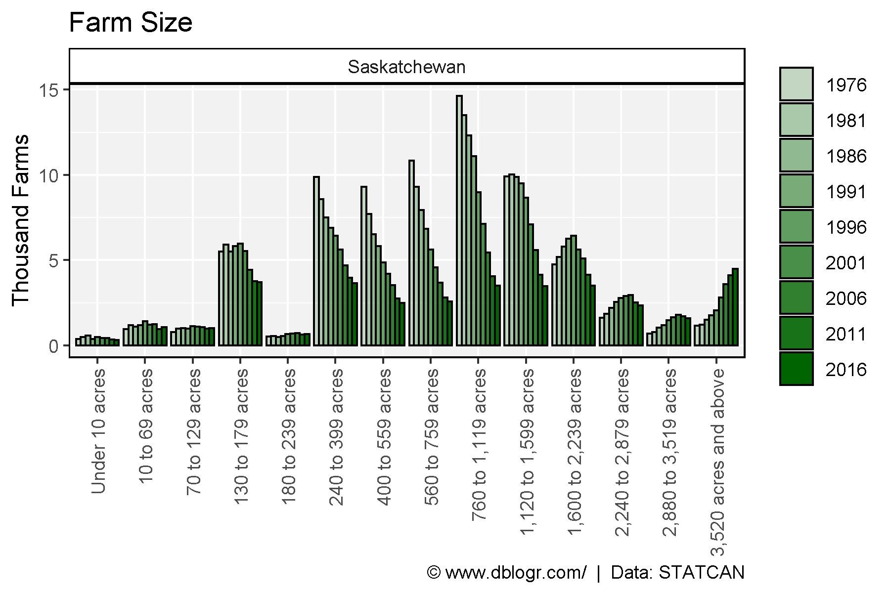
# Prep data
areas <- c("British Columbia", "Alberta", "Saskatchewan",
"Manitoba", "Ontario", "Quebec")
xx <- agData_STATCAN_FarmLand_Size %>%
filter(Area %in% areas, Measurement != "Total number of farms")
cols <- c(alpha("darkgreen",0.2), alpha("darkgreen",0.3), alpha("darkgreen",0.4),
alpha("darkgreen",0.5), alpha("darkgreen",0.6), alpha("darkgreen",0.7),
alpha("darkgreen",0.8), alpha("darkgreen",0.9), "darkgreen")
#
mp <- ggplot(xx, aes(y = Value / 1000, x = Measurement, fill = as.factor(Year))) +
geom_bar(stat = "identity", position = "dodge", color = "black") +
facet_grid(Area ~ .) +
scale_fill_manual(name = NULL, values = cols) +
theme_agData(axis.text.x = element_text(angle = 90, hjust = 1, vjust = 0.5)) +
labs(title = "Farm Size - Canada", y = "Thousand Farms", x = NULL,
caption = "\xa9 www.dblogr.com/ | Data: STATCAN")
ggsave("farmland_canada_2_11.png", mp, width = 6, height = 8)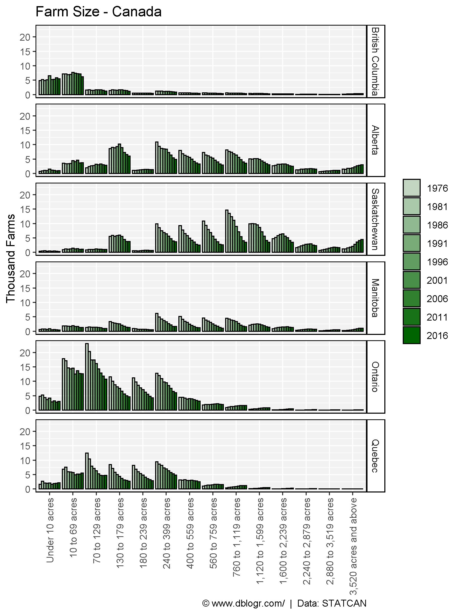
© Derek Michael Wright www.dblogr.com/